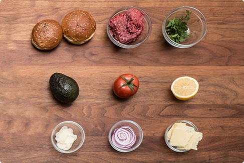

LANCASTER FARM BEEF BURGER
BRIOCHE BUN,AVOCADO, TOMATO, RED ONIONS, PARMESAN CHEESE

$11.95


"Pasture raised Beef from our local farm, with green garden salad, topped with avacado,red onion n all."

CHEF BRANDON
Alum of NewYork
ALL YOU W"LL BE DOING:
ALLOW 15-20 MINUTES
- Making the patties
- Slicing the tomatos and avocado
- Cooking the patties
- Mixing the salad
- Stacking the burger
WHAT WE'VE PREPPED:
20 MINUTES SAVED
- Measuring and portioning the ingredients
- Cleaned the vegetables,
- Peeled the garlic and red onions
- Chopped the garlic, red onions and gruyere cheese
FROM YOUR KITCHEN:
- Knife & cutting board
- 2 pans
- Mixing bowl
- Cooking spoon

IN THE BOX:
- Brioche Bun(2)
- Lancaster farm beef,ground
- Mustad Crest, picked
- Avocado
- Tomato
- Lemon , Halved
- Gralic, sliced
- Red onion , sliced
- Gruyere cheese , sliced
HOW TO SAFELY DE-STONE AN AVOCADO
HOW TO SAFELY DE-STONE AN AVOCADO
- Brioche Bun(2)
- Lancaster farm beef,ground
- Mustad Crest, picked
- Avocado
- Tomato
- Lemon , Halved
- Gralic, sliced
- Red onion , sliced
- Gruyere cheese , sliced
HOW TO MAINTAIN YOU KNIFE
HOW TO MAINTAIN YOU KNIFE
- Brioche Bun(2)
- Lancaster farm beef,ground
- Mustad Crest, picked
- Avocado
- Tomato
- Lemon , Halved
- Gralic, sliced
- Red onion , sliced
- Gruyere cheese , sliced
| PER SERVING | %DAILY VALUE | |
|---|---|---|
| CALORIES | 3 | 3 |
| TOTAL FAT | 3 | 3 |
| SATURATED FAT | 3 | 3 |
| TRANS FAT | ||
| CHOLESTEROL | ||
| SODIUM | ||
| SODIUM | ||
| SODIUM | ||
| SODIUM | ||
| SODIUM |
FOOD ALLERGY NOTICE:
Our meals are prepared in kitchen whose environment contains nuts and gulton.Though best practices are used when preparing the meal, In advertent cross-contamination may occur.We cannot guarantee the complete absence of allergens.
We strive to serve generous portion sizes and each meal is packed by hand. Actual serving size may vary. Percent Daily Values are based on a 2000 calorie diet. Your daily values may be higher or lower depending on your calorie needs.
JERRY L.
The amazing burger boasted more complexity due to the precision of the cooking process and the variery of fresh ingredients. Will cook again!
JERRY L.
The amazing burger boasted more complexity due to the precision of the cooking process and the variery of fresh ingredients. Will cook again!
JERRY L.
The amazing burger boasted more complexity due to the precision of the cooking process and the variery of fresh ingredients. Will cook again!
JERRY L.
The amazing burger boasted more complexity due to the precision of the cooking process and the variery of fresh ingredients. Will cook again!
JERRY L.
The amazing burger boasted more complexity due to the precision of the cooking process and the variery of fresh ingredients. Will cook again!
JERRY L.
The amazing burger boasted more complexity due to the precision of the cooking process and the variery of fresh ingredients. Will cook again!
JERRY L.
The amazing burger boasted more complexity due to the precision of the cooking process and the variery of fresh ingredients. Will cook again!
JERRY L.
The amazing burger boasted more complexity due to the precision of the cooking process and the variery of fresh ingredients. Will cook again!
JERRY L.
The amazing burger boasted more complexity due to the precision of the cooking process and the variery of fresh ingredients. Will cook again!